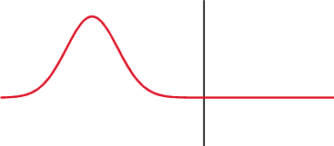
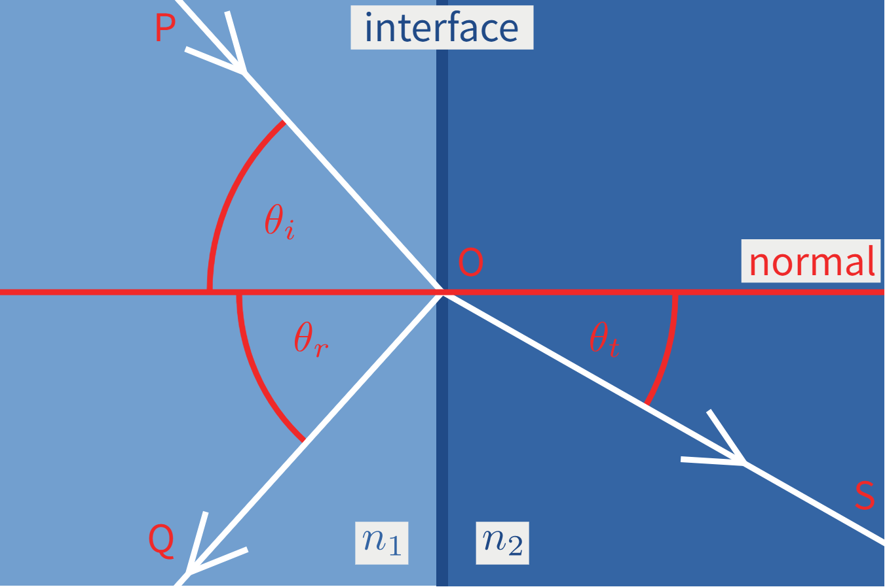

09-其他
snell law

斯涅尔定律表明，当光波从介质1传播到介质2时，假若两种介质的折射率不同，则会发生折射现象，其入射光和折射光都处于同一平面，称为"入射平面"，并且与界面法线的夹角满足如下关系：
其中，\(n_1\)、\(n_2\)分别是两种介质的折射率，\(\theta_1\)和\(\theta_2\)分别是入射光、折射光与界面法线的夹角，分别叫做"入射角"、"折射角"。
向量形式的折射公式
在光线追踪中，我们需要计算折射方向的向量。设： - \(\vec{I}\) 为入射方向（单位向量） - \(\vec{N}\) 为表面法线（单位向量） - \(\vec{T}\) 为折射方向（单位向量） - \(\eta = \frac{n_1}{n_2}\) 为相对折射率
根据 Snell 定律和向量几何关系，折射方向的向量计算公式为：
其中： - \(\cos \theta_i = \vec{I} \cdot \vec{N}\)（入射角的余弦值） - \(\cos \theta_t\) 需要通过 Snell 定律计算
推导过程
- 计算 \(\cos \theta_t\)： 由 Snell 定律：\(n_1 \sin \theta_1 = n_2 \sin \theta_2\)，可得： $$ \sin \theta_t = \eta \sin \theta_i $$
利用三角恒等式 \(\cos^2 \theta + \sin^2 \theta = 1\)： $$ \cos^2 \theta_t = 1 - \sin^2 \theta_t = 1 - \eta^2 \sin^2 \theta_i = 1 - \eta^2 (1 - \cos^2 \theta_i) $$
因此： $$ \cos \theta_t = \sqrt{1 - \eta^2 (1 - \cos^2 \theta_i)} $$
-
全反射判断： 当 \(\eta^2 (1 - \cos^2 \theta_i) > 1\) 时，即 \(1 - \eta^2 (1 - \cos^2 \theta_i) < 0\) 时，会发生全反射（total internal reflection），此时没有折射光线。
-
最终公式： 设 \(k = 1 - \eta^2 (1 - \cos^2 \theta_i)\)，则：
- 如果 \(k < 0\)，发生全反射，返回零向量
- 如果 \(k \geq 0\)，折射方向为： $$ \vec{T} = \eta \vec{I} + (\eta \cos \theta_i - \sqrt{k}) \vec{N} $$
Vector3f refract(const Vector3f &I, const Vector3f &N, const float &ior) {
float cosi = clamp(-1, 1, dotProduct(I, N)); // cos θ_i
float etai = 1.0f; // 入射介质折射率（通常为空气）
float etat = ior; // 透射介质折射率
Vector3f n = N;
// 判断光线在物体内部还是外部
if (cosi < 0) {
// 光线在物体外部（从空气射向物体）
cosi = -cosi;
} else {
// 光线在物体内部（从物体射向空气）
std::swap(etai, etat);
n = -N;
}
float eta = etai / etat; // 相对折射率 η
float k = 1 - eta * eta * (1 - cosi * cosi); // 判断是否全反射
// k < 0 表示全反射，返回零向量；否则返回折射方向
return k < 0 ? 0 : eta * I + (eta * cosi - sqrtf(k)) * n;
}
关键步骤说明：
- cosi = dotProduct(I, N)：计算入射角的余弦值
- eta = etai / etat：计算相对折射率
- k = 1 - eta²(1 - cos²θ_i)：判断是否发生全反射
- eta * I + (eta * cosi - sqrt(k)) * n：计算折射方向向量
fresnel equation
当光从一种折射率为\(n_1\)的介质向另一种折射率为\(n_2\)的介质传播时，在两者的交界处（通常称作界面）可能会同时发生光的反射和折射。菲涅尔方程描述了光波的不同分量被折射和反射的情况，也描述了波反射时的相变。
菲涅尔方程（Fresnel Equations）描述了光线在两种不同介质界面处的反射和透射行为。它计算了反射光强度与入射光强度的比值，即反射率（reflectance）。
方程成立的条件是：介质间界面是光滑平面；介质是均匀并且各向同性的；入射光是平面波；边际效应可被忽略。

波的部分的振幅经过由低到高折射率的介质的反射和折射。
由于任何偏振状态都可以分解成两个正交的线性偏振波的组合，所以两个系数就可以描述入射光的两种不同的线偏振分量。以下是两种情况（由于电场分量、磁场分量、光的传播方向由右手螺旋定则确定，所以仅讨论电场方向的偏振）：
偏振入射光的电场分量与入射光及反射光所形成的平面相互垂直。此时的入射光状态称为“s偏振态”，源于德语“垂直（senkrecht）”。 偏振入射光的电场分量与入射光及反射光所形成的平面相互平行。此时的入射光状态称为“p偏振态”，源于德语“平行（parallel）”。
菲涅尔方程基于电磁场的边界条件，考虑了两个偏振分量：
- s-偏振（垂直偏振）：电场垂直于入射平面
- p-偏振（平行偏振）：电场平行于入射平面
对于非偏振光（自然光），反射率是两种偏振分量的平均值。

菲涅尔反射率公式
s-偏振反射率:
p-偏振反射率:
非偏振光反射率:
其中： - \(n_1\) 为入射介质折射率 - \(n_2\) 为透射介质折射率 - \(\theta_i\) 为入射角 - \(\theta_t\) 为折射角
推导过程
- 折射角计算
根据 Snell 定律： $ n_1 \sin \theta_i = n_2 \sin \theta_t $
因此：$ \sin \theta_t = \frac{n_1}{n_2} \sin \theta_i = \eta \sin \theta_i $
其中 \(\eta = \frac{n_1}{n_2}\) 为相对折射率。
利用三角恒等式： $$ \cos^2 \theta_t = 1 - \sin^2 \theta_t = 1 - \eta^2 \sin^2 \theta_i = 1 - \eta^2 (1 - \cos^2 \theta_i) $$
因此： $$ \cos \theta_t = \sqrt{1 - \eta^2 (1 - \cos^2 \theta_i)} $$
- 全反射判断
当 \(\eta^2 (1 - \cos^2 \theta_i) > 1\) 时，即 \(\sin \theta_t > 1\)，发生全反射（Total Internal Reflection）。此时： - 没有折射光线 - 反射率 \(R = 1\)（全部反射）
- 反射率计算
当不发生全反射时，使用菲涅尔公式计算反射率：
s-偏振反射率: $$ R_s = \left( \frac{n_2 \cos \theta_i - n_1 \cos \theta_t}{n_2 \cos \theta_i + n_1 \cos \theta_t} \right)^2 $$
p-偏振反射率: $$ R_p = \left( \frac{n_1 \cos \theta_i - n_2 \cos \theta_t}{n_1 \cos \theta_i + n_2 \cos \theta_t} \right)^2 $$
注意：代码中的公式与上述标准形式略有不同，但本质相同（取决于如何定义 \(n_1\) 和 \(n_2\)）。
- 能量守恒
根据能量守恒定律： $$ R + T = 1 $$
其中： - \(R\) 为反射率（reflectance） - \(T\) 为透射率（transmittance）
因此，透射率可以通过反射率计算： $$ T = 1 - R $$
代码实现
提供的 fresnel 函数计算了光线在两种介质界面处的反射率 \(k_r\)。返回值范围在 \([0, 1]\) 之间：
- 接近 0：大部分光线透射（折射）
- 接近 1：大部分光线反射（或全反射）
float fresnel(const Vector3f &I, const Vector3f &N, const float &ior)
{
// 1. 计算入射角余弦值
float cosi = clamp(-1, 1, dotProduct(I, N));
// 2. 初始化折射率（默认从空气射向物体）
float etai = 1, etat = ior;
// 3. 判断光线方向，调整折射率顺序
if (cosi > 0) {
// 光线从物体内部射向外部，需要交换折射率
std::swap(etai, etat);
}
// 4. 使用 Snell 定律计算 sin(θ_t)
// sint = (n1/n2) * sin(θ_i) = (etai/etat) * sqrt(1 - cos²(θ_i))
float sint = etai / etat * sqrtf(std::max(0.f, 1 - cosi * cosi));
// 5. 全反射判断
if (sint >= 1) {
return 1; // 全反射，反射率为 1
}
else {
// 6. 计算折射角余弦值
float cost = sqrtf(std::max(0.f, 1 - sint * sint));
cosi = fabsf(cosi); // 确保 cosi 为正值
// 7. 计算 s-偏振反射率
float Rs = ((etat * cosi) - (etai * cost)) / ((etat * cosi) + (etai * cost));
// 8. 计算 p-偏振反射率
float Rp = ((etai * cosi) - (etat * cost)) / ((etai * cosi) + (etat * cost));
// 9. 返回平均反射率（非偏振光）
return (Rs * Rs + Rp * Rp) / 2;
}
// 注意：透射率 kt = 1 - kr（能量守恒）
}
关键步骤说明
cosi = dotProduct(I, N)：计算入射方向与法线的点积，得到 \(\cos \theta_i\)- 折射率交换：根据光线方向（从外部射入还是从内部射出）调整折射率顺序
- Snell 定律应用：计算 \(\sin \theta_t\)，判断是否发生全反射
- 全反射处理：当 \(\sin \theta_t \geq 1\) 时，返回反射率 1
- 菲涅尔公式：分别计算 s-偏振和 p-偏振的反射率
- 平均反射率：对非偏振光，取两种偏振的平均值
菲涅尔方程在图形学中的应用：
- 光线追踪：计算反射和折射光线的强度
- 材质渲染：模拟玻璃、水、金属等材质的反射特性
- PBR（基于物理的渲染）：作为 BRDF 的一部分，计算材质的反射率
- 环境映射：根据视角调整反射强度（掠射角时反射更强）
物理意义:
- 掠射角（grazing angle）：当入射角接近 90° 时，反射率接近 1（几乎全部反射）
- 垂直入射：当入射角为 0° 时，反射率最小
- 全反射：当从高折射率介质射向低折射率介质，且入射角大于临界角时，发生全反射